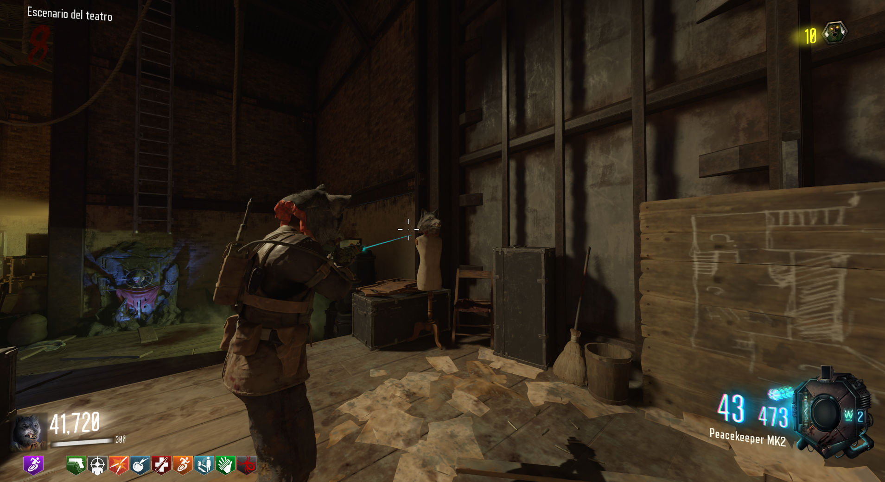
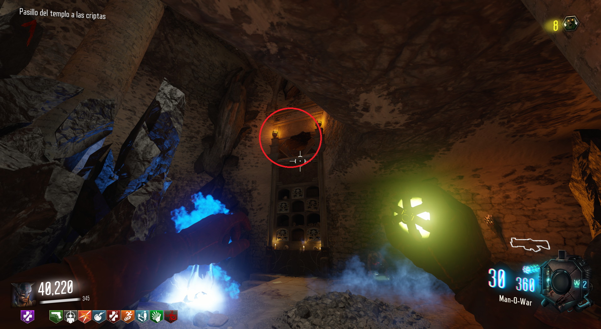
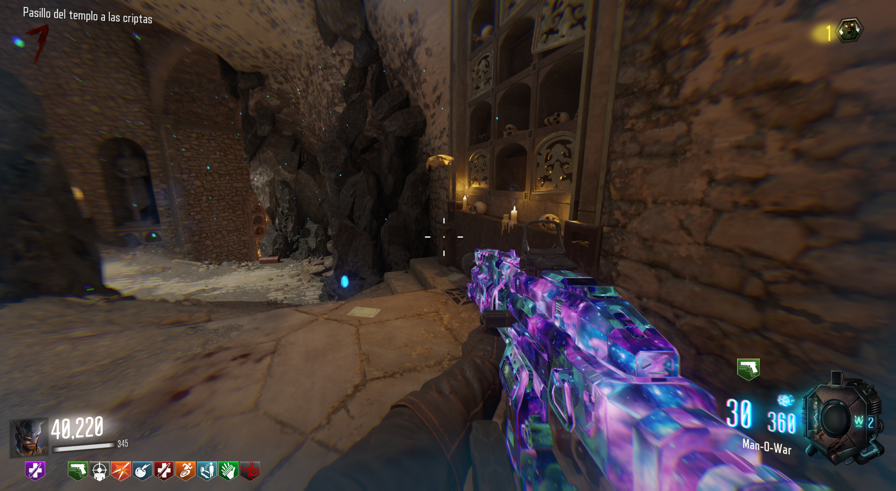
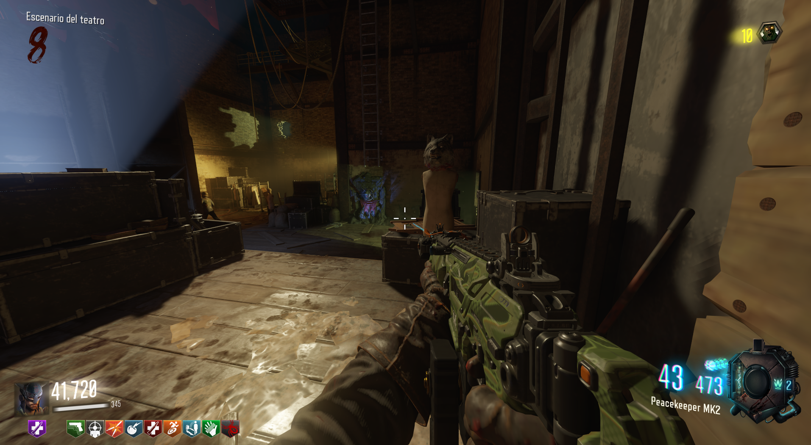

Máscara de lobo (Revelations)

La máscara de lobo nos dará un aumento en la duración de sprint.
Lo primero será llegar a la zona de Der Eisendrachen donde se hacía el arco de lobos y lanzar una granada dentro del agujero.

Hecho esto, una calavera caerá y tendremos que cargarla con almas de zombies, (unas 6).

Cuando lo hagamos, iremos a Kino der Toten y podremos reclamar la máscara.
